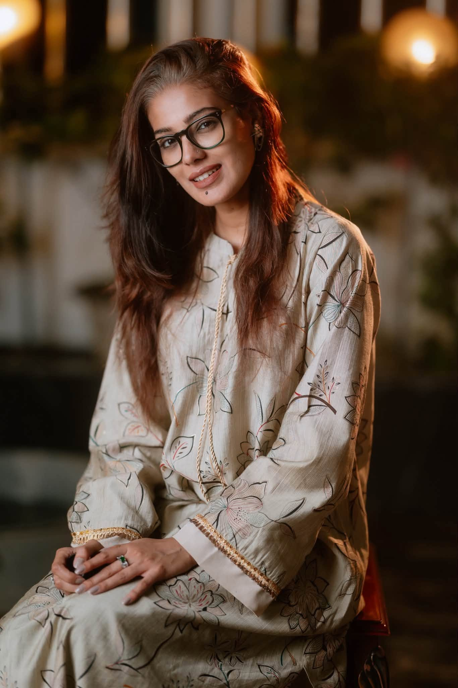

About
Hi, I’m Riba
Model first — then stylist, choreographer and director. A decade on Bangladesh's biggest ramps, and lately behind the camera too.

A decade on the ramp teaches you what a frame needs before the photographer says it.
I started as a runway model in 2010. These days the work rarely stops at the end of the catwalk: I style the shoots I appear in, choreograph shows, and direct. Recent firsts include co-directing the music video “E Shohore Tumihin”, shot across Kolkata, and a fashion film with a European Fashion Film Award–winning director — now headed for festivals in Europe and America.
- Based in
- Dhaka, Bangladesh
- Niche
- Runway · Editorial · Bridal · Campaign
- Languages
- বাংলা · English · हिन्दी
- Open to
- Worldwide travel
- Representation
- AMTC roster
— সাবরিনা জামান রিবা
Comp card
The stats
Agency-standard figures — full card on request.
- Height
- 5′8″
- Chest
- 34″
- Waist
- 26″
- Hips
- 36″
- Shoe
- EU 40
- Hair
- Black
Beyond the runway
Three more hats, one eye
What a booking can include beyond the walk.
-
Styling
Wardrobe and look direction for editorials and campaigns — including shoots credited as both model and stylist, like Merlot in The Daily Star.
Scoped per brief -
Choreography
Show choreography and ramp direction, built on ten-plus years of knowing exactly how a collection should move.
Bookable on its own -
Direction
Co-directed “E Shohore Tumihin” for Studio Maestros, shot in Kolkata; currently finishing a festival-bound fashion film.
Motion & film
Milestones
The road so far
Dated from her own archive of 170 albums.
- 2010
First ramp
The runway years begin in Dhaka.
- 2014
WE — for fashion runway
Walking the 2014 edition — and back again in 2015.
- 2015
Rtv Lux Bridal Festival
Bridal runway on national television.
- 2016
Muslin Festival & Sunsilk ATH Show
Heritage textiles on one stage, a beauty-brand show on another.
- 2017
Aarong Fashion Show
On the ramp for the country's best-known lifestyle brand.
- 2021
National interview
“I think I will do experimental work with myself” — Shampratik Deshkal.
- 2023
সমর্থন বাংলাদেশ কনসার্ট
On stage at the 2023 concert.
- 2024–25
RISE, two seasons
Winter ’24 in the studio, Fall ’25 on the streets of Dhaka.
- Next
Fashion film
With a European Fashion Film Award–winning director — bound for festivals in Europe and America.
Want the longer story — or the comp card PDF? Ask.
Get in touch